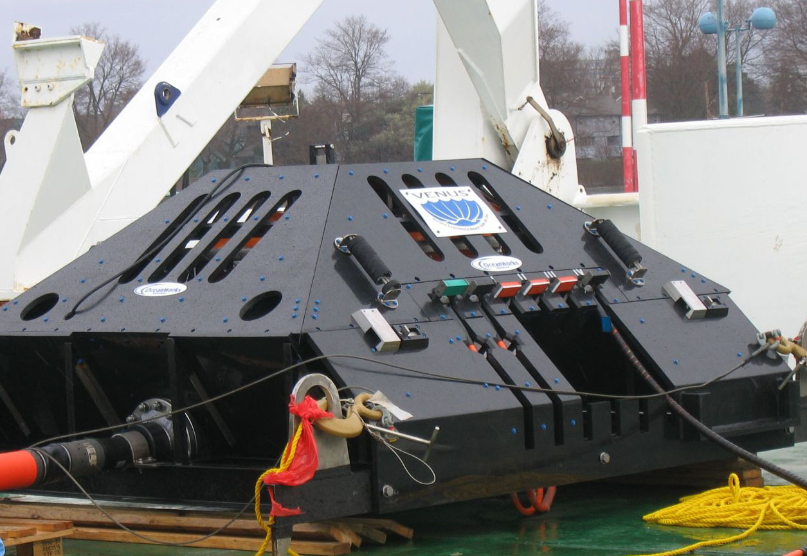
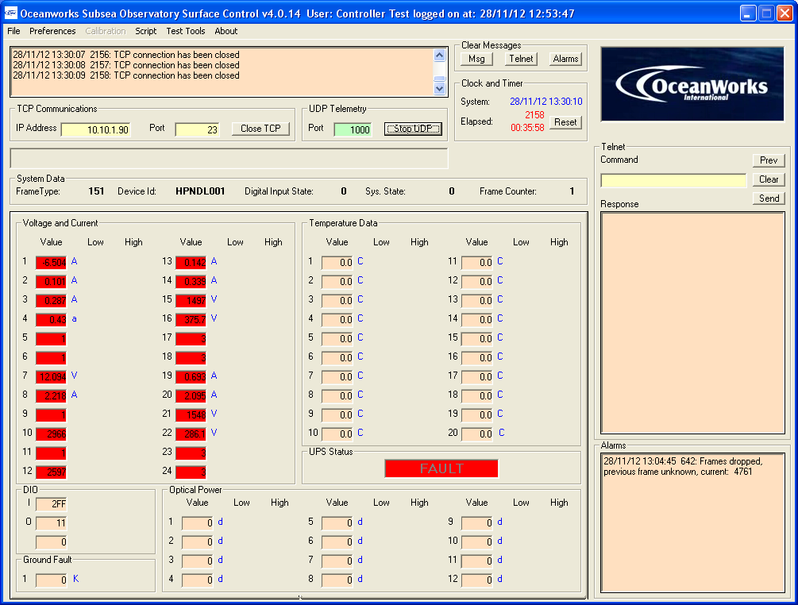
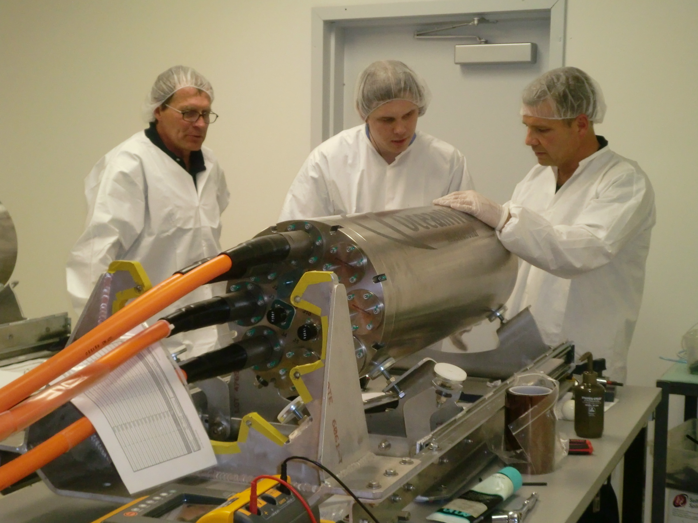

Monitoring, Maintenance & Upgrades
OceanWorks International provides through-life support for its seafloor network systems and components, including:
-
System training -
Installation planning and support -
System operational monitoring -
Inspection, repair, maintenance and system upgrades Full post-delivery technical support services are provided through our Product Support department and engineering team.

System Training
OceanWorks provides complete system training for customers and end users to allow them to operate and maintain the systems using their own staff. We combine this training with the provision of complete manuals and documentation to ensure a complete understanding of the system design functionality.
Installation Planning & support
OceanWorks, the customer and other key contractors, such as cable installation experts, work together to complete installation plans and procedures. This includes definition of final integrated system testing procedures and development of pre-deployment checklists and preparation instructions. Plans and procedures are tailored to the specific support vessels and intervention assets. (drivers, ADS, ROV or manned submersibles) planned for use.
OceanWorks can provide:
• Full deployment support, including vessel and ROV specification and charter
• Dynamic load analysis
• Deck layouts
• Deck interface engineering
• Mobilization and de-mobilization plans
• Joint safety assessment frameworks
• Emergency plans and personnel support for day-to-day operations while at sea
Systems can be configured to provide real time access to instrument data and system monitoring during installation operations.
System Operational Monitoring

OceanWorks' cabled observatory management software controls and monitors the subsea hardware over the life of deployment, and data is checked in real time for fault conditions and error values. If a monitored value exceeds a configurable pre-determined range, the software will provide an email and SMS text message warning to designated operators.
Should a critical value be exceeded, the subsea software will automatically turn off the appropriate ports, automatically trigging an email / SMS alert from the management software.
All data sent to and from the seafloor is logged on the surface allowing additional post processing. To support data processing, automated scripts have been developed to provide additional error checking and trend detection. OceanWorks provides technical support to help interpret off nominal conditions and to assist in developing the appropriate intervention and corrective actions to keep the system on line.
Inspection, Repair, Maintenance and System Upgrades

OceanWorks will assist the customer in planning and executing post installation inspections, repairs and maintenance.
In order to achieve a high data availability from the seafloor, OceanWorks understands that cabled observatories also require ongoing planned preventive and emergency maintenance. The experience gained by OceanWorks during the design and build of cabled observatories provides an extensive resource for customers during maintenance planning and execution. OceanWorks has Engineers and Technicians available to help with any maintenance issues and can be transported globally at short notice. Our facility in Burnaby, Canada is also setup to support upgrades and refurbishment of existing equipment (Press Release) as a project's needs grow and evolve.
The node pod system and use of modular SIIMs, all with wet mate connectors, allows an ROV to recover components to the surface for repair and maintenance. Oceanworks will assist the customer in planning for obsolete parts replacements and upgrades.